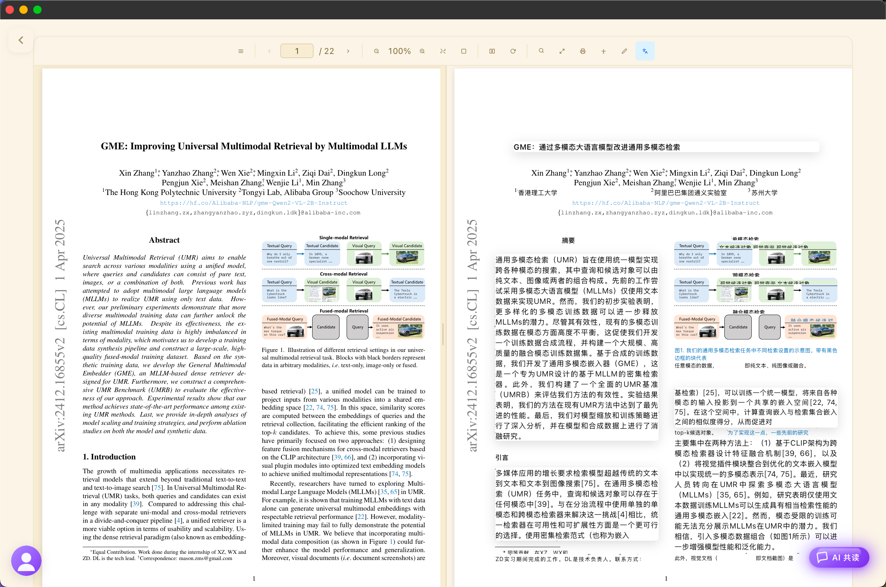
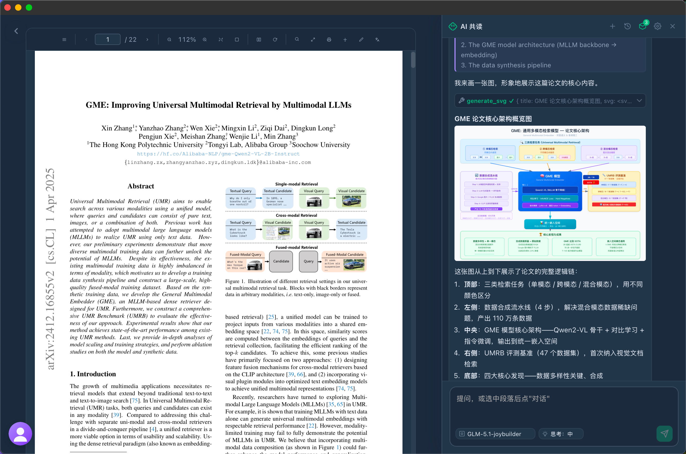
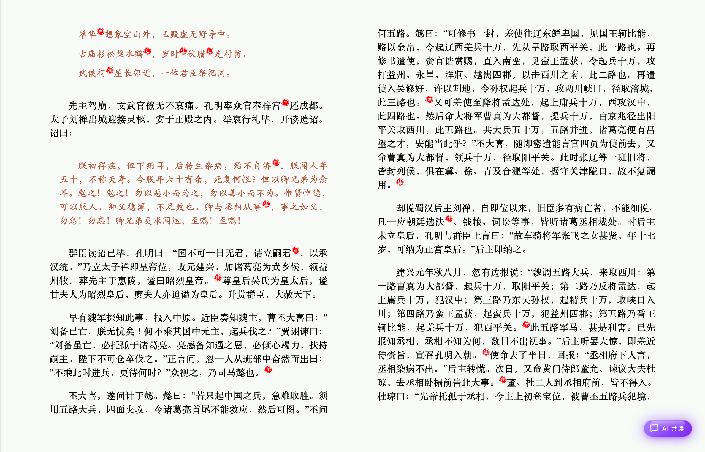

ArXiv 顶会推荐
首页智能聚合 ArXiv 顶会论文，一键点击即刻沉浸阅读，追踪前沿从未如此轻松。
小月亮阅读器 · jdk.plus
从发现到理解，小月亮陪你走完知识的每一步。
首页智能聚合 ArXiv 顶会论文，一键点击即刻沉浸阅读，追踪前沿从未如此轻松。
原文与译文段落级对照呈现，跨越语言的门槛，让每一篇外文论文都清晰可读。
选中段落即问即答，AI 帮你拆解公式、梳理脉络、总结贡献，读懂难点不再孤单。
翻页动效、标注批注、字体排版细节打磨，还原纸书般的沉浸阅读感受。
从月夜深空到晨曦暖阳，八种自带主题随心切换，护眼与美感兼得。
高亮、笔记、划线随手记录，你的思考与灵感被稳稳沉淀。
真实界面 · 所见即所得，每一帧都值得细看。
首页智能聚合当日 ArXiv 顶会热门论文，封面式卡片一目了然，轻点即刻进入沉浸阅读，让追踪前沿成为一种享受。

原文与译文段落级并排对照，滚动同步、高亮呼应，跨越语言的门槛，让每一篇外文论文都清晰可读。

选中段落即问即答，AI 帮你拆解公式、梳理脉络、总结贡献，读懂每一个难点，不再独自苦思。

细腻翻页动效、随手标注批注、精心打磨的排版细节，还原纸书般的沉浸，让阅读回归纯粹。
让阅读的每一刻都恰到好处。